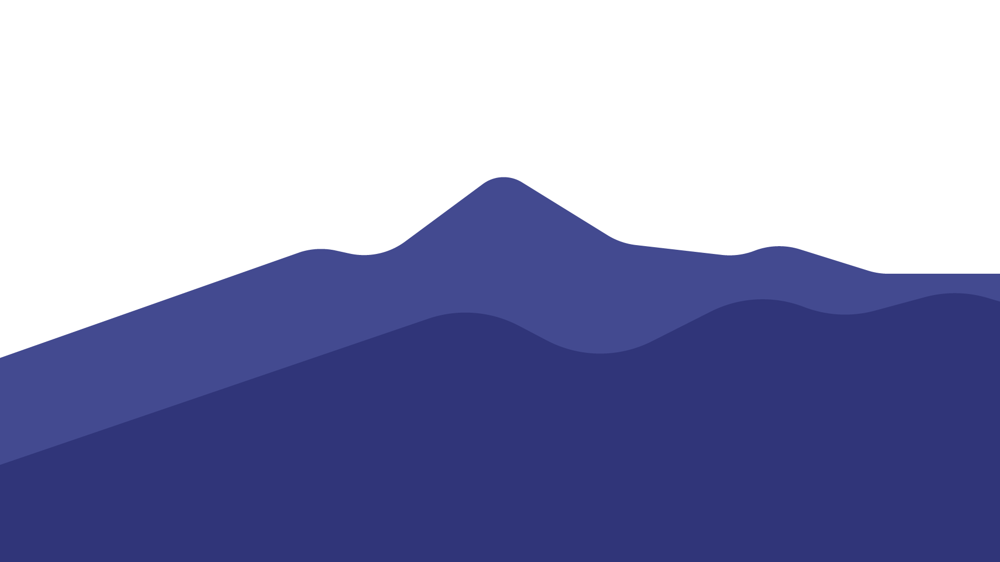
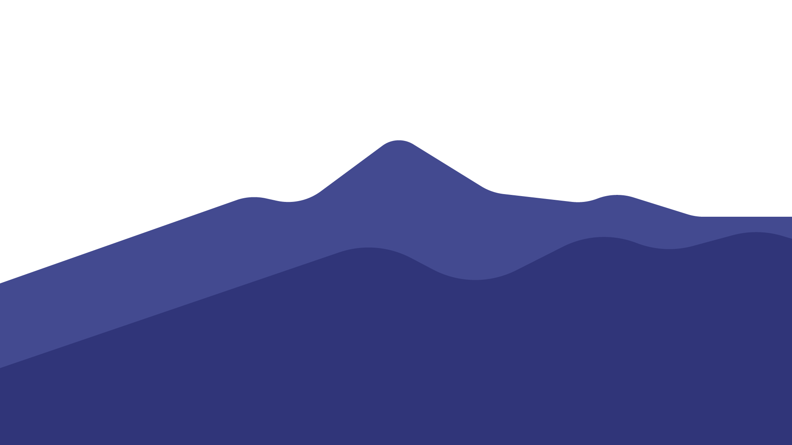
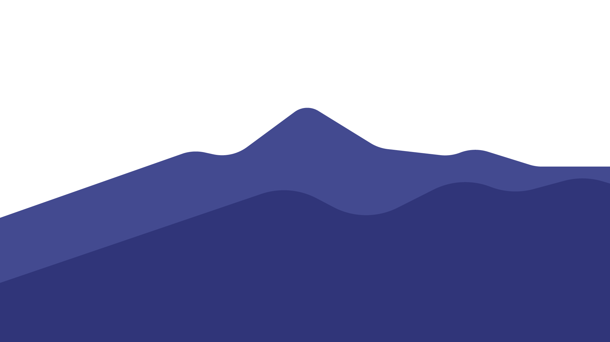
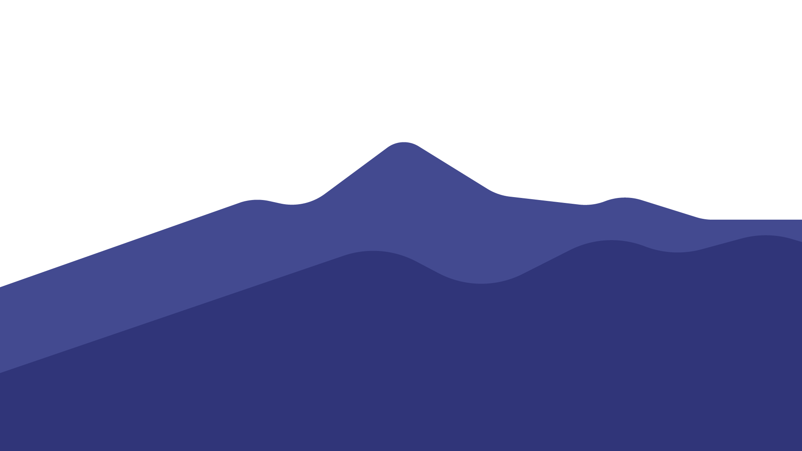

Hiking and Trekking
Explore 

Hiking dan Trekking bisa menjadi salah satu aktivitas outdoor untuk menghabiskan akhir pekan. Selain bisa menikmati pemandangan alam yang indah dan udara segar, kedua aktivitas tersebut juga termasuk olahraga yang bisa meningkatkan kesehatan fisik dan kekuatan otot kaki. Karena sama-sama harus menempuh jarak yang panjang dan mendaki, dua aktivitas alam ini sering kali dikira sama. Supaya tidak keliru, ketahui perbedaan hiking dan trekking, serta manfaatnya untuk kesehatan tubuh.
Hiking adalah aktivitas jalan-jalan jauh, terutama lintas negara. Dalam pengertian umum, hiking adalah aktivitas berjalan kaki di jalur yang sudah ada, melalui pegunungan, semak-semak, dan daerah pedesaan.
Trekking adalah perjalanan panjang yang sulit dan biasanya akan seseorang tempuh dengan berjalan kaki. Adapun, kegiatan ini bertujuan untuk menjelajahi alam dengan berjalan kaki. Melalui jalur-jalur yang belum atau jarang orang lalui. Saat melakukan trekking, kamu akan menghadapi medan yang beragam seperti pegunungan, hutan, sungai, dan daerah terpencil. Trekking umumnya membutuhkan keterampilan navigasi dan orientasi yang baik, serta perlengkapan yang sesuai seperti sepatu hiking yang kokoh, peralatan perkemahan, dan perlengkapan lainnya.
Salah satu perbedaan hiking dan trekking adalah tujuanya. hiking dilakukan untuk bersenang-senang sementara trekking juga untuk bersenang-senang, tetapi dengan tujuan tertentu.
Salah satu perbedaan utama antara hiking dan trekking adalah trekking melibatkan jarak yang lebih jauh daripada hiking, dan biasanya memakan waktu berhari-hari. Sedangkan hiking biasanya hanya memakan waktu setengah hari atau sehari penuh.
Hiking biasanya melibatkan jalur dan jalan yang sudah terbuat sebelumnya, sementara trekking bisa melibatkan berbagai medan. Misalnya, jalur lintas alam, jalan tanah, jalur gunung, atau area tanpa jalan di hutan belantara.
Hiking tidak membutuhkan banyak peralatan dan perlengkapan. Untuk melakukannya setengah hari, biasanya tas yang ringan dengan sebotol air minum, makan siang, dan kaus kaki cadangan sudah cukup. Sementara trekking memerlukan banyak peralatan dan perlengkapan. Tas sebesar 50-60 liter wajib kamu gunakan. Kamu juga perlu membawa tenda, sleeping bag, makanan, peralatan masak, baju, obat-obatan, kompas, dan lain-lain.
Sebuah studi oleh Centers for Disease Control and Prevention menemukan bahwa berjalan setidaknya satu jam sehari, lima hari dalam seminggu bisa mengurangi risiko terkena stroke menjadi setengahnya.
Menurut jurnal ilmiah berjudul Hiking: A Low-Cost, Accessible Intervention to Promote Health Benefits, menyebutkan bahwa hiking adalah olahraga multifungsi untuk kesehatan. Waktu yang seseorang habiskan di alam dapat memberikan manfaat kesehatan melalui interaksi dengan unsur alam, partisipasi dalam aktivitas fisik, pemulihan kesehatan mental dan emosional, dan kontak sosial.
Menurut jurnal ilmiah berjudul Nature experience reduces rumination and subgenual prefrontal cortex activation yang terbit dalam hiking dan trekking bisa menjadi cara untuk melarikan diri sejenak dari aktivitas sehari-hari yang membuat stres dan penat. Stres, depresi, dan kecemasan sering kali bisa berkembang ketika kamu mengurung diri di dalam kamar terlalu lama. Nah, pergi ke alam untuk mendaki dan berjalan kaki selama 90 menitan bisa mengalihkan pikiran dari kekhawatiran.
Kemping atau camping ialah satu aktivitas yang sudah dilakukan di alam terbuka, pegunungan atau rimba dengan tenda sebagai rumah sebentar. Aktivitas kemping mempunyai keterikatan yang kuat dengan kepramukaan dan kepencinta alam